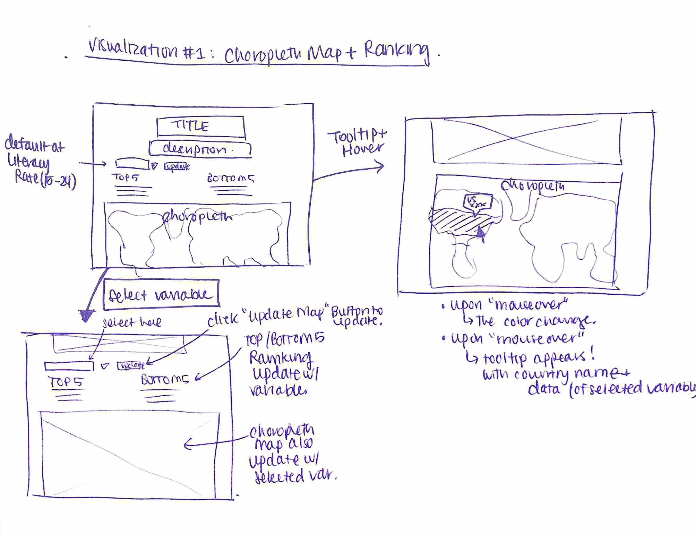
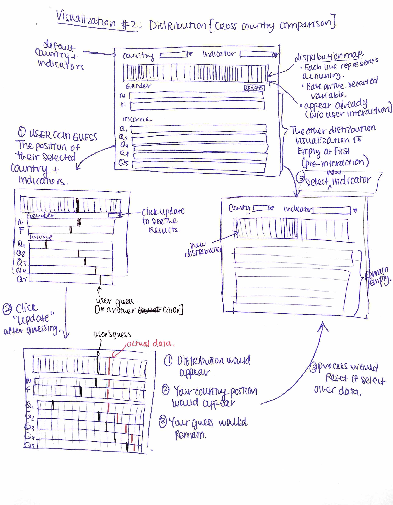
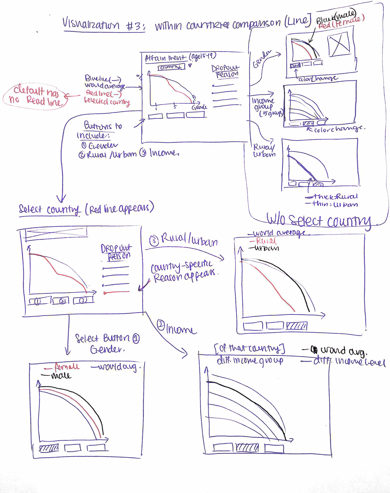
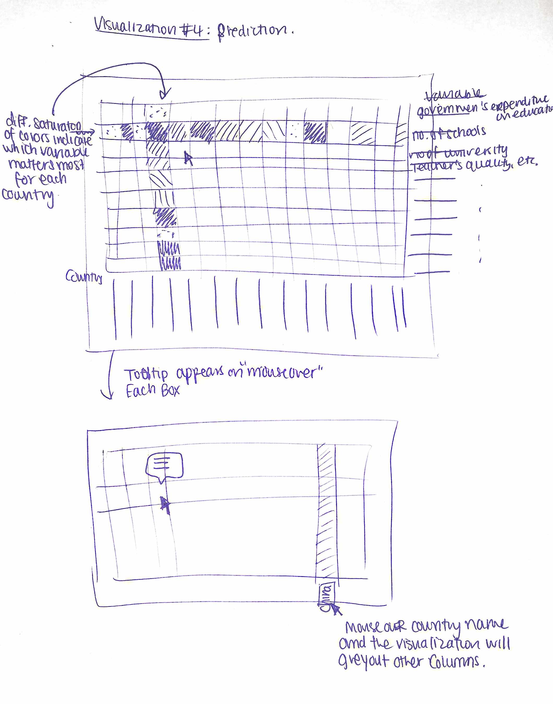

Visualization 1: General education statistics around the world -- Choropleth map with linked ranking of top 5 and bottom 5 countries by indicator (unfinished version below)
Visualization 2 (cross-country comparisons): looking at global distribution in educational indicators (plus comparisons by gender and wealth).The user will be able to guess based on their priors where their selected country might be in the distribution. Then, we will show them the true position
Visualization 3 (within-country comparisons): looking at attainment profiles by age group, gender, rural/urban, wealth within a country to reveal patterns in who is attending/dropping out of school. There will also be annotations that give contextual information on why some countries see certain trends/dropoffs.
Visualization 4 (within-country predictions): Will run probit/logit regressions for each country to predict outcomes such as graduating from college. Each square will represent a covariate in a single regression and hovering over it will show the coefficient (weight). We will also use saturation to highlight the predictors with greater importance in different countries. Users will be able to enter their own characteristics into the regression model for a country to see what their predicted outcome would be.
